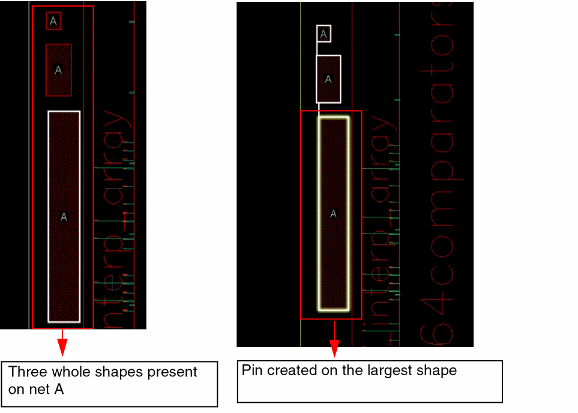
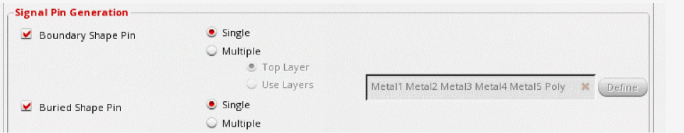
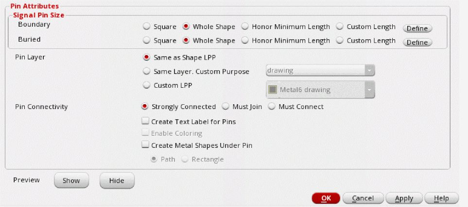

Creating Boundary and Buried Pins on Whole Shapes
The Auto-Create Pins form lets you search for net shapes in a design and automatically creates a boundary or buried pin on the largest whole shape that is present inside the PR boundary. You can create different pin shapes such as square, rectangle, L-shaped, and path pin. In the following image, three whole shapes of different sizes are present on the same net and on the same layer in the layout design. After running the tool, a pin is created on the largest whole shape.

To create pins on whole shapes:
-
In the Pin Tool, choose Create – Auto-Create Pins.
The Auto-Create Pins form is displayed. -
In the Signal Pin Generation section, choose Boundary Shape Pin and Buried Shape Pin options to create boundary and buried whole shapes.
 - Select Single to create a signal pin on the highest metal layer.
-
In the Pin Attributes section, set the Signal Pin Size for Boundary and Buried pin shapes to Whole Shape in order to specify the type of whole shape pins to be created - boundary, buried or both.
 - Click OK.
The pin is created on the largest shape after running the Auto-Create Pin tool.
Related Topics
Creating Pins Automatically in the Pin Tool
Return to top